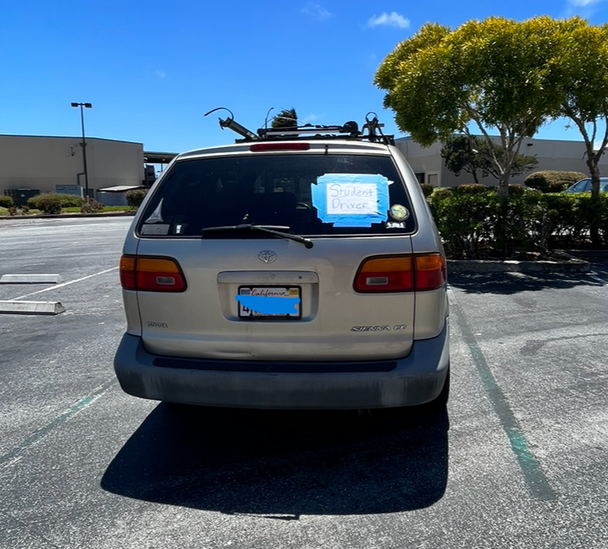
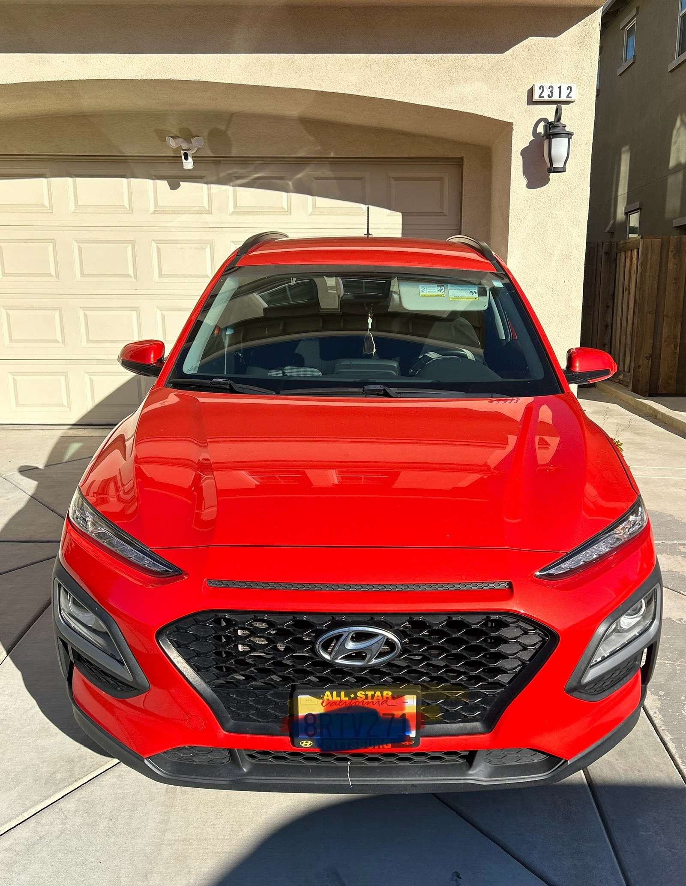

Lab 6 - Arrays and Objects
Challenge
Learn to declare arrays and objects.
Problems
My biggest problem arose with the syntax at the begginning, as I was using equal signs to declare a variable instead of a colon.
Reflection
This is the fastest I've ever finished a lab, and I did not start it the day it was due! Thus, I am able to make it look nicer and fully understand what I am doing.
Results/Script Output
Here are Some of the Cars I've Used!

This is the car I mainly use, her name is VANessa. The picture is from the summer when I first learned to drive.
This is Kona, my partner's car. Kona is the only other car I have ever driven.